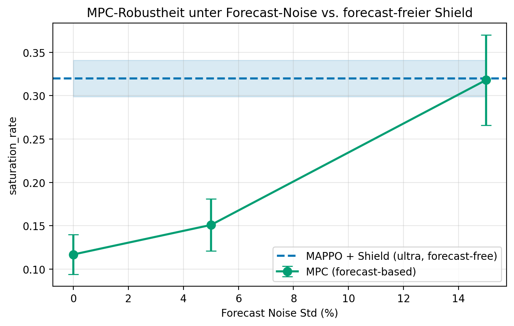
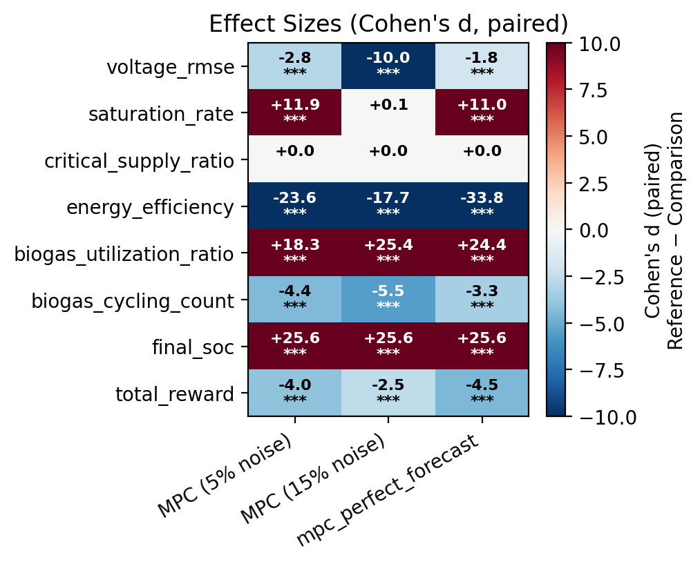

Machine learning · Control
Multi-Agent RL for Microgrid Control
Cooperative reinforcement-learning agents that keep a simulated DC microgrid's voltage stable and its critical loads supplied — benchmarked head-to-head against the classical controllers used in real power systems.
Overview
A real power grid keeps its frequency stable by constantly matching generation to demand. A small DC microgrid faces the same challenge in miniature: several independent sources — solar, wind, biogas, a battery — must cooperate to hold the bus voltage steady and keep the most important loads powered, even though no single source sees the whole system. This project asks how well a multi-agent reinforcement-learning controller can do that job compared with the classical control methods engineers use today.
The research question
Can learned controllers beat the classics?
The benchmark is a physically realistic simulation of a heterogeneous DC microgrid built on a shared 5.5-volt bus with a supercapacitor buffer. Bus voltage is left to float freely as a dynamic state — the direct analogue of grid frequency — so the agents must actively stabilise it. The biogas source has realistic ramp rates and minimum run-times, wind follows a hub-height power law, and weather is driven by real Open-Meteo data for Bielefeld, where renewables alone cover only about 40% of demand and storage planning spans hours.
It is modelled as a cooperative multi-agent environment: four agents share a 21-dimensional view of the system and a common reward that penalises voltage deviation, unsupplied critical load, wasteful curtailment, and unsafe battery charge. Three control speeds — acting every 1, 5, or 30 seconds — form the core study matrix. The whole simulation is built as a faithful digital twin of my Smart Energy Node hardware, so a trained policy can later be deployed on the real board.
Approach & methods
Learning to control — safely.
The main controller is a multi-policy PPO setup: one learning agent per source, each with its own policy, all sharing a global observation. (I'm deliberate about the naming — it is not the centralized-critic MAPPO of the original paper, and the write-up says so, because that distinction matters to a reviewer.) Two ablations isolate why it works: an independent-learner variant with only local observations, and a single-agent variant that merges all four actions into one policy.
Safety is handled by an action-projection shield — a training-free layer that catches any unsafe command and projects it to the nearest admissible one before it reaches the grid. It is backed by three formal safety theorems, checked with roughly 64,000 randomised property-based tests. I also tried a Lagrangian constrained-RL approach and report it as an honest negative result, alongside behaviour-cloning warm-starts from the droop controller.
The learned controllers are measured against three serious baselines — droop control, a heuristic model-predictive controller, and a convex/QP model-predictive controller — under domain randomisation for sensor noise and actuator drift. Every headline number comes with a bootstrap confidence interval and a paired significance test with effect sizes.
Results
Lowest voltage error of any controller.
On the headline configuration (20 random seeds, paired bootstrap), the RL controller achieves the lowest bus-voltage error of every method tested — well ahead of droop control and the convex MPC, and statistically tied with the strongest classical baseline while holding voltage limits more tightly.
Bus-voltage RMSE by controller
Lower is better. RL result highlighted.
The RL controller also posts the lowest voltage-saturation rate (0.068) and the best total reward of the group.



Small enough for the real board. The trained policy quantises to about 76 KB and runs in 2.7 ms — comfortably inside a 5 € ESP32-S3 microcontroller. The controller that wins in simulation is also the one that could actually ship on the hardware it was designed for.
Technology
A reproducible research stack.
Scope & honesty
These are simulation results, reported on the clean, post-audit run as the canonical numbers; sim-to-real transfer to the physical node is future work. The fastest control setting remains a weak spot, and domain randomisation helps unevenly across stress scenarios — all stated openly in the write-up rather than hidden behind the best configuration. The project is being prepared toward a venue such as IEEE PES ISGT Europe or ACM e-Energy.